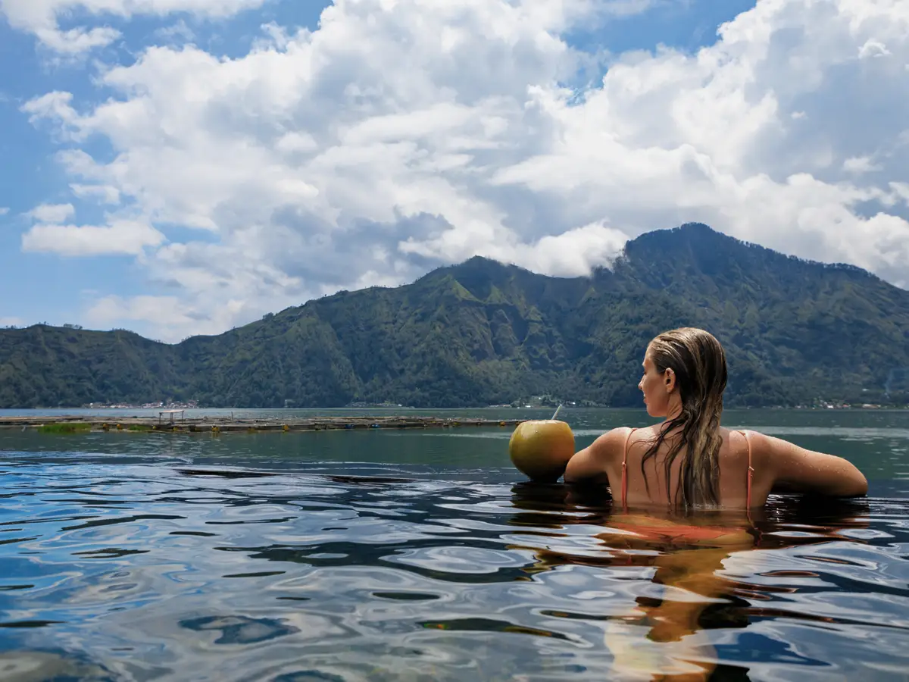

What You'll Do

Mount Batur Sunrise Trek & Summit Breakfast
A pre-dawn guided climb up the 1,717-metre active volcano, reaching the summit just as the sun breaks over Lake Batur and Mount Agung. The trail is moderate and no technical experience is needed - just a head torch and a warm layer. At the top, breakfast is served with one of Bali's best views. Catch your breath, take it all in, then head back down as the island wakes up.

Natural Hot Spring by Lake Batur
We finish with a soak in natural volcanic hot springs on the shore of Lake Batur. Mineral water warmed underground by the volcano eases tired legs after the sunrise trek, with the caldera and lake around you. The perfect, relaxing end to a big morning.